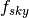

Module contents¶
- class PS4Cast.Experiment(ID, sensitivity, frequency, fwhm, fsky, nchannels=1, units_sensitivity='uKarcmin', units_beam='arcmin', **kwargs)[source]¶
Bases: object
Initialize a class encodes all the nominal specifics of an experiment, i.e. resolution, sensitivity, size of the observational area, frequency channels.
Parameters
- ID:{string}
name of the experiment, needed for plotting and printing info.
- frequency:{float or sequence}
the frequency of channels (assumed GHz)
- nchannels:{int}
number of frequency channels
- fwhm:{float or sequence}
the the Full Width at Half Maximum resolution, units can be deg, arcmin, or arcsec, set the keyword argument units_beam, (Default= arcmin)
- sensitivity:{float or sequence}
the sensitivity at each channel. Default units are , but one can change different units by the units_sensitivity keyword.
- fsky:{float}
percentage of the sky observed by the experiment.
Note
If units_sensitivity=uKsqrts then another keyword must be set, the observational time.
- class PS4Cast.Forecaster(Experiment, sigmadetection=5.0, ps4c_dir='./')[source]¶
Bases: object
Given the specifics of an experiment, it forecasts the contribution of detected and undetected point sources (only Radio Quasars are considered so far). It inheritates the attributes from the Experiment, needed to be initialized, the level of point source detection. The forecasts start when the Forecaster class is called.
Parameters
Experiment:{Experiment}
- sigmadetection:{float}
set the level above one can consider point sources as detected.
- ps4c_dir:{string}
path to the PS4C/data and PS4C/model folders
- forecast_nsources_in_the_patch()[source]¶
Given the size of the observational patch it computes how many sources should be detected above the detection flux limit.
- get_differential_number_counts()[source]¶
Given the frequency channels finds the total intensity number counts from predictions of De Zotti et al. 2005 model (prediction at several frequencies are provided in ./PS4C/model directory) and computes the polarization number counts by deconvolving the intensity number counts with the probability distribution of fractional polarization.
- get_differential_number_counts_tucci()[source]¶
Given the frequency channels finds the total intensity number counts from predictions of Tucci et al. 2011 model and computes the polarization number counts as in get_differential_number_counts().
- get_npolsources_from_flux(minflux=None)[source]¶
By default, it computes how many polarized sources should be observed above the detection limit otherwise the sources whose flux >``minflux``.
- plot_integral_numbercounts(**kwargs)[source]¶
Plot integral number counts, i.e. number of sources above the detection flux per square degree units.
- plot_powerspectra(spectra_to_plot='all', FG='compsep', **kwargs)[source]¶
Plot CMB and undetected Point sources Power spectra.
Parameters
- spectra_to_plot:{string}
a string among:
- all: T, E and B spectra will be shown
- TandB: T and B spectra
- Tonly: T spectrum
- Bonly: B spectrum
- FG:{string}
show the Galactic foreground levels, a string among:
- compsep: the 95perc of residuals after component separation
- total: total amplitude
- none: will not be shown
- kwargs:
keywords for matplotlib plots.
- pointsource_utilities.Kcmb2Krj(nu, Tcmb)[source]¶
Convert physical temperature into the antenna one.
- pointsource_utilities.Krj2Kcmb(nu, Trj)[source]¶
Convert antenna temperature ( Rayleigh-Jeans) into the physical one
- pointsource_utilities.Krj2brightness(temp, freq, theta_beam)[source]¶
Convert brightness temperature to brightness measured in [Jy /beam]
- pointsource_utilities.beamsolidangle(theta)[source]¶
Given a FWHM resolution theta in radians, it computes the solid angle in steradians
- pointsource_utilities.brightness2Kcmb(nu, Ib)[source]¶
Returns conversion factor to pass from Ib brightness units to physical temperature at a given frequency nu
- pointsource_utilities.brightness2Krj(sigmaS, freq, theta_beam)[source]¶
Convert brightness to brightness temperature
- pointsource_utilities.compute_confusion_limit(K, Gamma, omega_b, q=5)[source]¶
Compute the confusion limit by means of the definition in Condon, 1974.
where we set for the truncation limit.
Parameters
- K, Gamma as computed from fit_numbercounts_w_powerlaw().
- pointsource_utilities.compute_dNdP(A, mu, sigma, dNdS, S, Np_quad=32)[source]¶
Compute the convolution of differential number counts with the lognormal distribution function, i.e.
Parameters
- A, mu, sigma: {floats}
lognormal best fit values computed from Stats.fitting_lognormal_from_fpol() and Stats.fitting_lognormal_from_fluxes().
- dNdS:{func}
interpolated differential number counts
- S:{array}
flux densities
- Np_quad:{int}
number of quadrature points.
Returns
- Pbin: {array}
polarized fluxes
- interpolated_dNdP:{func}
interpolated polarized differential number counts.
- pointsource_utilities.compute_polfrac_scaling(dir_ps, exclude_HFI_data=True, include_steep=False, **kwargs)[source]¶
- Considering observations from several catalogues, it computes the observed polarization fractions
and fit a lognormal distribution in order to get from the best fit parameters the average values of and their errors. Once all the datasets have been fitted it computes the scaling of by means of a linear function.
Parameters
- dir_ps: {string}
path to the PS4C data folder
- exclude_HFI_data:{bool}
if set to True it exclude the data from HFI channels of Planck.
- include_steep:{bool}
- if set to True it includes in the computation even Steep Spectrum Radio Sources.
We recommend you to use this option if you are running at low radio frequencies, i.e. GHz.
Returns
- A, sigmaA:{float}
the slope and the error on the slope as computed from the linear fit
- B, sigmaB:{float}
the constant term fitted from the linear function
- pointsource_utilities.compute_variance_ratios(fsky, dir_ps='./data/')[source]¶
Given a fraction of sky  if computes the ratio of the variance of the synchrotron and dust maps within a patch with size fsky and the one within fsky0 which is the value from Planck collaboration et al. 2015.X . All the considered patches exclude the Galactic plane.
Parameters
fsky: {float}
- dir_ps:{string}
path to the PS4C data folder
Returns
- -fs: {float}
- ratio of synchrotron variances
- -fd: {float}
- ratio of thermal dust variances
- pointsource_utilities.estimate_power_spectrum_contribution(dNdS, nu, omega_b, Smin, Smax)[source]¶
Given differential number counts , estimated at certain flux densities , it estimates the integral
Parameters
- dNdS: {func}
differential number counts interpolated by means of numpy.interpolate.interp1d()
- ` nu`:{float}
frequency
- omega_b:{float}
solid angle of the beam
- Smin and Smax:{float}
range of integration
- pointsource_utilities.fit_numbercounts_w_powerlaw(S, n, Smax, **kwargs)[source]¶
Fit the differential number counts as a single power law up to a maximum flux density.
Parameters
- S: {array}
array of fluxes
- n: {function}
differential number counts computed from interpolating number counts from model
- Smax: {float}
the flux limit you may want to estimate the power law fit
Returns
- K:{float}
- Gamma: {float}
- pointsource_utilities.forecast_Galaxy(ell, nu, fsky, **kwargs)[source]¶
Compute the Galactic contribution in multipole ell , frequency nu and fraction of sky fsky given eq.(22) of Planck 2015 X data are taken from table 4, table 5, table 11.
Parameters
- ell : {float or array} multipole orders
- nu :{float}
- fsky:{float}
- pointsource_utilities.get_spectral_index(v1, v2, S1, S2)[source]¶
Computes the spectral index of fluxes S1, S2 estimated at two different frequencies, v1 and v2.
- pointsource_utilities.sigmaf(P, I, sigmaP, sigmaI)[source]¶
Given polarized and intensity flux , P and I and their uncertainties sigmaP and sigmaI, propagates the uncertainties to polarization fraction .
- class PointSources.PointSources(idx, catalog, ps_dict, pol_sensitive=True)[source]¶
Bases: object
- class IO.bash_colors[source]¶
- BOLD = '\x1b[1m'¶
- ENDC = '\x1b[0m'¶
- FAIL = '\x1b[91m'¶
- HEADER = '\x1b[95m'¶
- OKBLUE = '\x1b[94m'¶
- OKGREEN = '\x1b[92m'¶
- UNDERLINE = '\x1b[4m'¶
- WARNING = '\x1b[93m'¶
- IO.extract_flux_from_planck_catalog(catalog, freq, **kwargs)[source]¶
Read PCCS2 catalog at a given frequency.
Parameters
- catalog:{string}
- freq:{float}
- IO.project_sources2map(ps_list, nside, omega_beam, polarization=False, forecast_pol=None, muK=1000000.0)[source]¶
Project the list of PointSources into a healpix map
- IO.read_ps_selection_from_hdf5(filename)[source]¶
Read a list of PointSources from a hdf5 binary file.
- IO.search_in_catalogue(catalogue, minlat, maxlat, minlong, maxlong, coord='EQ', pol_sensitive=True, LFI=False, verbose=True)[source]¶
Look for point sources within and in a catalogue .
Returns
- counter:{int}
number of sources found
- point_sources:{list}
list of the point source found within the ranges
- IO.write_ps_selection_to_hdf5(ps_list, filename)[source]¶
From a list of PointSources save the list into a hdf5 binary file.
- Stats.bootstrap_resampling(I, sigmaI, P, sigmaP, nsamples, upper_limit=False)[source]¶
- It performs the bootstrap resampling from observations. For each group of values (I,P, sigmaI, sigmaP) it resamples nsamples values with Gaussian random values Isamples and Psamples with center around I, or P and width sigmaI and sigmaP. If data are upper limit it resamples by assuming a uniform
distribution of random number from 0 to .
Parameters
- `I, sigmaI, P, sigmaP`={floats}
values for resampling
- nsamples:{int}
how many resampling to do
upper_limit:{bool}
Returns
- f:{array}
resampled fractional polarization
- Stats.compute_poissonian_uncertainties(bc, Ntot, S, perr)[source]¶
Compute Poissonian upper and lower limit uncertainties from Gehrels 1986.
Parameters
- bc:{array}
counts within each bin
- Ntot: {int}
total number of data
- S: {int}
the confidence level (CL) for uncertainties, we consider S=1, meaning 68% CL, S=2 for the 95%, etc...
- perr:{array}
array where upper and lower uncertainties are stored, shape= 2 x size(bc).
- Stats.fitting_lognormal_from_fluxes(flux, polflux, eI, eP, idstring, fig=None, nbins=15, resampling=True, workdir='./', **kwargs)[source]¶
Fit logrnormal distribution of fractional polarization from catalog encoding total intensity and polarized fluxes.
Parameters
- flux, eI:{array}
total intensity fluxes and errors
- polflux, eP:{array}
polarization flux and errors
- idstring: {string}
string used for plotting
- fig:{int}
id of figure
- nbins:{int}
fractional polarization histogram bins
- resampling:{bool}
if True resample the catalog with 1000 resampling, otherwise it does not.
- workdir:{string}
path to store plots and files.
- saveplot:{string}
name and format to store the plot of the lognormal fit in workdir
- bestfitparams2file:{bool}
save the computed best fit parameters, the average fractional polarizations to binary file *.npy in workdir.
Returns
- Pim, Pi2, Pi:{floats}
- deltapim, deltap2 deltap
errors on the computed quantities.
- Stats.fitting_lognormal_from_fpol(fpol, errfpol, flags, idstring, fig=None, nbins=15, resampling=True, workdir='./', **kwargs)[source]¶
Fit logrnormal distribution of fractional polarization from catalog encoding fractional polarization and errors on it.
Parameters
- pol:{array}
fractional polarization
- errfpol:{array}
errors of fractional polariz.
- flag:{array}
if flag=1 ` or `flag=True it means that data are flagged and they are considered as upper limits.
The rest of the parameters are the very same as in fitting_lognormal_from_fluxes()
- Stats.lognormal_distribution(X, A, Xm, sigma)[source]¶
Compute log-normal distribution on X:
Parameters
- X:{array or float}
polarization fraction array
- A:{float}
constant
Xm:{float}
sigma:{float}
- Stats.pi(mu, sigma, apply_correction=False)[source]¶
Compute from
 lognormal best fit parameters, following Battye et al. 2011.
lognormal best fit parameters, following Battye et al. 2011.
- Stats.pi2(mu, sigma, apply_correction=False)[source]¶
Compute from
lognormal best fit parameters, following Battye et al. 2011.
- Stats.pimed(mu, sigma, apply_correction=False)[source]¶
Compute from
lognormal best fit parameters, following Battye et al. 2011.
- Stats.resampling_fpol(fpol, sigma, flag, nresampl=100)[source]¶
Resampling a catalogue starting from fractional polarization values, errors and flags into the data. Flags identify which data have to be considered as upper limits.
Parameters
- fpol:{float}
- sigma:{float}
- flag:{bool}
- nresampl:{int}
how many resampling to do
Returns
- fpolres:{array}
array of resampled fractional polarizations.